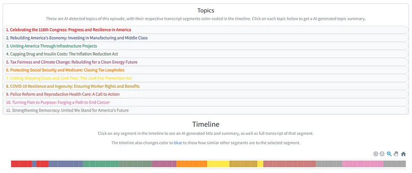

Summarization and Extraction
Misc
LangChain
- Current {{LangChain}} summarization implementations:
- Recursive Summarization, in which the long text is split equally into shorter chunks which can fit inside the LLM’s context window. Each chunk is summarized, and the summaries are concatenated together to and then passed through GPT-3 to be further summarized. This process is repeated until one obtains a final summary of desired length.
- Major downside is that existing implementations e.g. LangChain’s summarize chain using map_reduce, split the text into chunks with no regard for the logical and structural flow of the text.
- For example, if the article is 1000 words long, a chunk size of 200 would mean that we would get 5 chunks. What if the author has several main points, the first of which takes up the first 250 words?
- Refine method, which passes a chunk of text, along with a summary of the previous chunks, through the LLM, which progressively refines the summary as it sees more of the text. See prompt for details. - Sequential nature of the process means that it cannot be parallelized and takes linear time, far longer than a recursive method which takes logarithmic time - Meaning from the beginning parts of the text could be overrepresented in the final summary. This would be bad if the beginning text has something not germane like advertisements in it.
- Recursive Summarization, in which the long text is split equally into shorter chunks which can fit inside the LLM’s context window. Each chunk is summarized, and the summaries are concatenated together to and then passed through GPT-3 to be further summarized. This process is repeated until one obtains a final summary of desired length.
- 2-Stage Topic Summarization Method:
- Description:
- Split the summary outputs from one step of the recursive summarization into chunks to be fed into the next step.
- Cluster chunks semantically into topics and pass topics into the next iteration of the summarization.
- It does not drastically increase the LLM costs — we are still passing just as much input as the conventional method into the LLM, yet we get a much richer summarization.
- Notes from Summarize Podcast Transcripts and Long Texts Better with NLP and AI
- Example: Summarize Biden state of the union speech
Preprocessing:
- Split the raw text it into sentences, restricting sentences to have a minimum length of 20 words and maximum length of 80.
- Create chunks of sentences. Chunk size should be the number of sentences it generally takes to express a discrete idea. Example uses 5 sentences (but you can experiment with other numbers) with 1-sentence overlap between chunks, just to ensure continuity so that each chunk has some contextual information about the previous chunk.
- Maybe figure out the average count of sentences per paragraph.
- This article tried something a little more extreme by chunking each paragraph (At least I think that’s what this means. It’s a fucking run-on sentence.) Might not of worked because maybe he had a lot of 1 sentence paragraphs?
- “Initially, I also tried splitting the text blocks into paragraphs, hypothesizing that because a section may contain information about many different topics, the embedding for that entire section may not be similar to an embedding for a text prompt concerned with only one of those topics. This approach, however, resulted in top matches for most search queries disproportionately being single line paragraphs, which turned out to not be terribly informative as search results.”
- Resulted in 65 chunks, with an average chunk length is 148 words, and a range from 46–197 words
Produce a Title and Summary for each chunk.
# Prompt to get title and summary for each chunk map_prompt_template = """ Firstly, give the following text an informative title. Then, on a new line, write a 75-100 word summary of the following text: {text} Return your answer in the following format: Title | Summary... e.g. Why Artificial Intelligence is Good | AI can make humans more productive by automating many repetitive processes. TITLE AND CONCISE SUMMARY: """- Prompt for gpt3 model with title and summary output separated by a bar, |.
Transform summaries of chunks into embeddings
- Pass summaries to an openai or huggingface model to get embeddings
Group semantically-similar chunks together into topics
- Create a chunk similarity matrix, where the (i,j)th entry denotes the cosine similarity between the embedding vectors of the ith and jth chunk ({{scipy}} for cosine similarity function)
- Use the Louvain community detection algorithm to detect topics from the chunks ({{networkx}} for Louvain algorithm)
- Has a hyperparameter called resolution — small resolutions lead to smaller clusters.
- Additionally, a hyperparameter proximity_bonus is created, which bumps up the similarity score of chunks if their position in the original text is closer to each other. You can interpret this as treating the temporal structure of the text as a prior (i.e. chunks closer to each other are more likely to be semantically similar).
- Another example, using a Bloomberg podcast transcript, shows how this method detected blocks of advertisements.
Produce a title for each topic
- For much longer texts like books, repeat this process several times until there are ~10 topics left whose topic summaries can fit into the context window.
- Each topic has a number of chunks associated with it. Titles were produced for each chunk earlier in the process. So, loop each topic’s chunks’ list of titles through an LLM to get a refined title for that topic.
- Do this concurrently (i.e. simultaneously) for all topics to prevent the topics’ titles from being too similar with one another.
- This output will be the label of each topic (see Visualization section)
Produce a summary for each topic
- Similar to the previous section.
- Feed chunk summaries of each topic to GPT-3, and get a refined summary
- Same as befeore, this needs to be done concurrently
Final Summary: To arrive at the overall summary of the text, concatenate the topic summaries together and prompt GPT-3 to summarize them.
Visualization

- Description:
OpenAI
Misc
Prompt Format
import openai import os openai.api_key_path = "/path/to/key" def get_completion(prompt, model="gpt-3.5-turbo"): """ This function calls ChatGPT API with a given prompt and returns the response back. """ messages = [{"role": "user", "content": prompt}] response = openai.ChatCompletion.create( model=model, messages=messages, temperature=0 ) return response.choices[0].message["content"] user_text = f""" <Any given text> """ prompt = f""" <Any prompt with additional text> \"\"\"{user_text}\"\"\" """ # A simple call to ChatGPT response = get_completion(prompt)- The function “get_completion†calls the ChatGPT API with a given prompt. If the prompt contains additional user text, it is separated from the rest of the code by triple quotes.
Example: Customer Reviews
Summarization Prompt
prompt = f""" Your task is to generate a short summary of a product \ review from an e-commerce site. \ Summarize the review below, delimited by triple \ backticks, in exactly 20 words. Output a json with the \ sentiment of the review, the summary and original review as keys. \ Review: ```{prod_review}``` """ response = get_completion(prompt) print(response)Response from ChatGPT
{ "sentiment": "positive", "summary": "Durable and engaging children's computer with intuitive interface and educational games. Volume could be louder.", "review": "I purchased this children's computer for my son, and he absolutely adores it. He spends hours exploring its various features and engaging with the educational games. The colorful design and intuitive interface make it easy for him to navigate. The computer is durable and built to withstand rough handling, which is perfect for active kids. My only minor gripe is that the volume could be a bit louder. Overall, it's an excellent educational toy that provides hours of fun and learning for my son. It arrived a day earlierthan expected, so I got to play with it myself before I gave it to him." }- “summary†is accurate and well structured, although it misses some information we could be interested on as the owners of the e-commerce, such as information about the delivery of the product.
- Therefore, you should iterate and try to improve the response
- “summary†is accurate and well structured, although it misses some information we could be interested on as the owners of the e-commerce, such as information about the delivery of the product.
Add focus to prompt to improve summary
prompt = f""" Your task is to generate a short summary of a product \ review from an ecommerce site. \ Summarize the review below, delimited by triple \ backticks, in exactly 20 words and focusing on any aspects \ that mention shipping and delivery of the product. \ Output a json with the sentiment of the review, \ the summary and original review as keys. \ Review: ```{prod_review}``` """ response = get_completion(prompt) print(response)- “focusing on any aspects that mention shipping and delivery of the product”
Improved response
{ "sentiment": "positive", "summary": "Durable and engaging children's computer with intuitive interface. Arrived a day earlier than expected.", "review": "I purchased this children's computer for my son, and he absolutely adores it. He spends hours exploring its various features and engaging with the educational games. The colorful design and intuitive interface make it easy for him to navigate. The computer is durable and built to withstand rough handling, which is perfect for active kids. My only minor gripe is that the volume could be a bit louder. Overall, it's an excellent educational toy that provides hours of fun and learning for my son. It arrived a day earlier than expected, so I got to play with it myself before I gave it to him." }- “summary†includes the focus but lost the negative input, so you can either increase the word limit or extract the additional information separately.
Extract Specific Information
prompt = f""" Your task is to extract relevant information from \ a product review from an ecommerce site to give \ feedback to the Shipping department. \ From the review below, delimited by triple quotes \ extract the information relevant to shipping and \ delivery. Use 100 characters. \ Review: ```{prod_review}``` """ response = get_completion(prompt) print(response) >> Shipping: Arrived a day earlier than expected.- “extract the information relevant to shipping and delivery”
- Have also seen the phrase, “include only,†used instead of “extract†in the prompt
Batch Extraction
reviews = [ "The children's computer I bought for my daughter is absolutely fantastic! She loves it and can't get enough of the educational games. The delivery was fast and arrived right on time. Highly recommend!", "I was really disappointed with the children's computer I received. It didn't live up to my expectations, and the educational games were not engaging at all. The delivery was delayed, which added to my frustration.", "The children's computer is a great educational toy. My son enjoys playing with it and learning new things. However, the delivery took longer than expected, which was a bit disappointing.", "I am extremely happy with the children's computer I purchased. It's highly interactive and keeps my kids entertained for hours. The delivery was swift and hassle-free.", "The children's computer I ordered arrived damaged, and some of the features didn't work properly. It was a huge letdown, and the delivery was also delayed. Not a good experience overall." ] prompt = f""" Your task is to generate a short summary of each product \ review from an e-commerce site. Extract positive and negative information from each of the \ given reviews below, delimited by triple \ backticks in at most 20 words each. Extract information about \ the delivery, if included. \ Review: ```{reviews}``` """Response
1. Positive: Fantastic children's computer, fast delivery. Highly recommend. 2. Negative: Disappointing children's computer, unengaging games, delayed delivery. 3. Positive: Great educational toy, son enjoys it. Delivery took longer than expected. 4. Positive: Highly interactive children's computer, swift and hassle-free delivery. 5. Negative: Damaged children's computer, some features didn't work, delayed delivery.